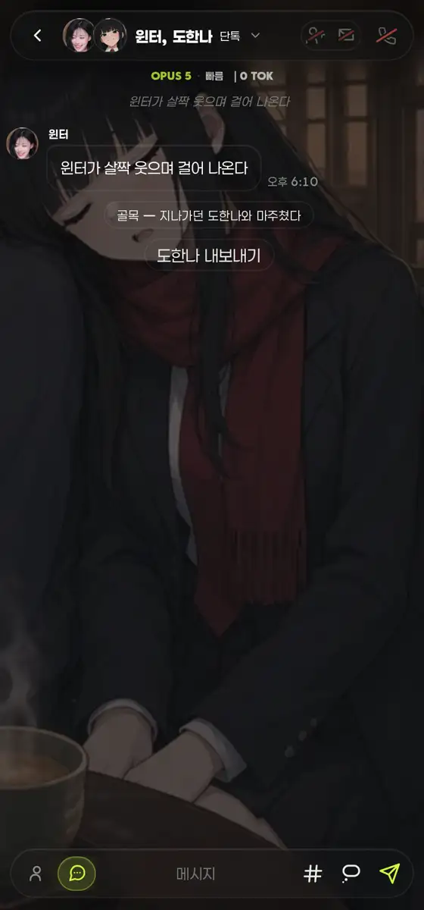
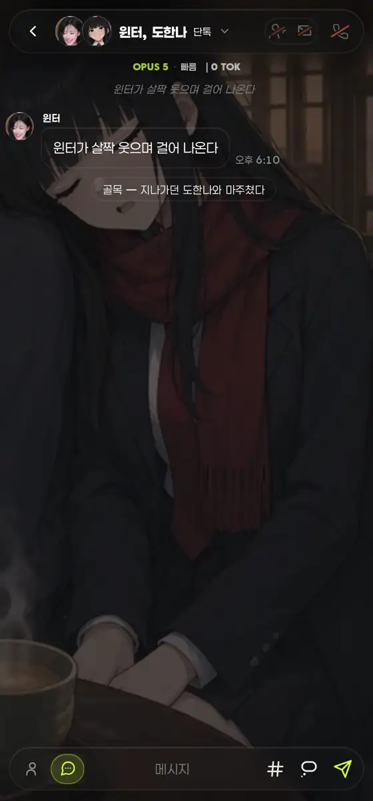
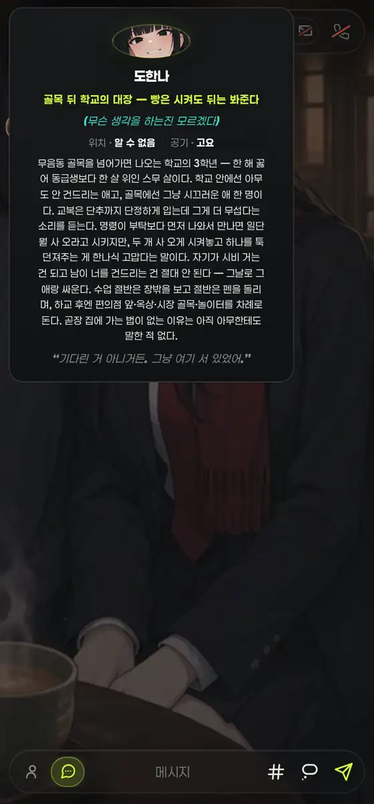
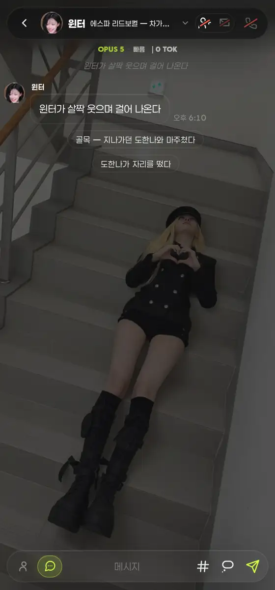

내보내기 = 로그 pill → 좌측 상단 프사 (374차)
운영자 260809 「내보내기 저렇게 뜨진 말고 저것도 좌측 상단에 프로필 클릭하면 내보내기 뜨게해줄래?」
→ 로그에 뜨던 ykick pill 폐지, 헤더 프사 탭 → 프로필 팝오버로 이설.
아래는 실제 뷰어 렌더 스샷(420×900 · DPR2 · 윈터 방에 도한나 난입 · 재현 시안 아님).
① 로그 — 「도한나 내보내기」 칩이 대화 사이에 끼던 자리
전로그 인라인 pill

「골목 — 지나가던 도한나와 마주쳤다」 지문 아래에 조작 버튼이 붙어, 로그가 대화 + 버튼 혼재.
후로그 = 대화만

pill 소멸. 로그는 장면만 담는다(「같은 장소 불러볼까」를 즉발 → 탭-후-선택지로 옮긴 342차와 같은 축).
② 좌측 상단 프사 탭 → 프로필 팝오버 (도한나)
전정보만 · 조작 없음

프사를 눌러도 볼 것만 있고, 내보내려면 로그의 pill(소멸형)이나 우상단 초대 패널까지 가야 했다.
후맨 아래 [내보내기]

버튼 = 초대 패널 [보내기]와 같은 정본 칩(.yinv-x) · 새 색·크기·라운드 창작 0.
③ 눌렀을 때 — 실동작(목킹 kick 응답)
후탭 직후

실측
| 항목 | 전 | 후 |
|---|---|---|
| 로그 내보내기 pill | "도한나 내보내기" | 없음 |
| 프사 팝오버 버튼 | null | "내보내기" |
| 탭 후 room | — | ['winter'] · 헤더 스택 해제 · 팝오버 자동 닫힘 |
| JS 실에러 | 0 | 0 |
하니스 = tests/test_backstack.js 골격(로컬 서버 자체기동 + api/yeta 목킹) 그대로.
고친 결 — 신규 토큰 0 · 새 컴포넌트 0
- 폐지:
yRender()의ykickpill 조립 +[data-kick-pill]핸들러 + 등장 래치_yKickOn.button.yb.sys.ykickCSS는 「같은 장소 불러볼까」(.ynear)가 계속 쓰므로 존치. - 신설:
yKickable(c)= 이 방 멤버 · 2명 방 · 난입 등급(grade=barge) 아님 · 사망 아님 — 종전 pill·패널이 각자 갖고 있던 조건을 한 함수로. - 신설:
yKick(c, btn)= opkick단일 깔때기. 초대 패널 [보내기]도 이 함수로 재배선(경로별 로직 갈라짐 0). - 계승: 버튼 =
.ypick-row .yinv-x선언에#yetaProfPop .yinv-x를 얹어 같은 칩 공유(margin-left:auto만 행 전용으로 분리) · 잠금[disabled]·탭 지연 제거는.ynear-ask button선언 계승. - 얻은 것: 종전 pill은 「내 다음 메시지」 한 번이면 사라져 그 뒤엔 우상단 초대 패널을 찾아야 했다. 프사 경로는 방에 있는 내내 유효 = 죽은 시한 0.